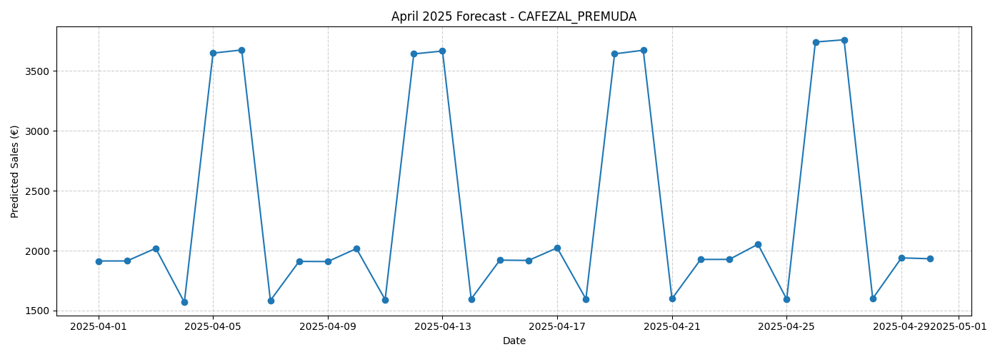

Quantitative Economics and Computer Science, built toward a career in investment analysis — a data-driven foundation grounded in independent quantitative research.
BasedMinneapolis, MN
CurrentlySt. Olaf College — Class of 2026
Focusinvestment analysis · quantitative research
about
My path is aimed at investment analysis. I study Quantitative Economics and Computer Science at St. Olaf because the two together let me actually build and stress-test the models an investment thesis rests on, not just cite someone else's output.
Along the way that's meant cleaning healthcare data at scale, building dashboards executives actually use, and running independent quantitative research pairing classical forecasting with quantum computing techniques, portfolio optimization included. Each one is the same motion investment analysis runs on: take a messy real-world question and get to a decision-ready answer.
experience
Data Engineering Associate
Revature, in partnership with Cognizant
An intensive data engineering apprenticeship (Python, SQL, PySpark, AWS/cloud concepts) building toward a team capstone: a full patient-visits data pipeline built for a simulated healthcare client, the kind of client Revature/Cognizant places engineers with. Served as Student Infrastructure Lead on a four-person team, building the AWS environment (S3, EMR, IAM) and an Airflow-orchestrated ETL DAG (EMR cluster lookup, S3 sensors, EmrAddStepsOperator, EmrStepSensor).
The full pipeline: a web patient-intake form feeds a Kafka producer, a Python consumer lands raw JSON into S3 (valid and rejected paths, with Kafka offsets committed only after a safe write), PySpark cleans and normalizes the data into a star schema (a Visits fact table against Patient, Doctor, Nurse, and Location dimensions), and Snowflake reads the resulting Iceberg tables directly via native metadata refresh rather than a heavy COPY INTO step, with Gold-layer reporting tables auto-refreshing hourly. A SQL validation suite runs automated pre- and post-load audits, null encounter IDs, negative billing amounts, orphaned foreign keys, even a regex check that unmasked SSNs never reach the Silver layer.
Power BI dashboards on top surfaced real findings from the dataset: Emergency was both the highest-revenue and highest-volume department, and a single physician accounted for the largest share of billing, exactly the kind of KPI hospital shareholders would actually ask for.
AWS (S3, EMR, IAM, Glue)PySparkKafkaAirflowSnowflake / IcebergPower BI
Backend Developer Intern
Euler Data Solutions, Bordeaux, France
Built a Spring Boot microservice for one of Euler's investigative products, turning unstructured case documents, police reports, bank statements, and whatever else was feeding an active investigation, into structured case data: people and their roles, locations, and a dated incident timeline flagged by significance. Documents run entirely through a locally-hosted Mistral 7B model rather than a cloud API, so sensitive case material never leaves the client's environment. Long reports are chunked to fit the model's context window, processed independently, then deduplicated and merged back into one clean case record, with malformed model output caught and skipped per chunk rather than failing the whole document.
Built branch-level sales forecasting models for Cafezal's four Milan locations, using Random Forest regressors trained on two years of hourly POS data plus engineered time features (7-day rolling mean/std, lagged sales, weekday and hour encoding) and local weather data. Produced April demand forecasts per branch to support staffing and production planning, alongside an hourly peak-classification model flagging predictable rush periods.
Actual vs. predicted daily sales, Premuda branch — the model's best-performing location.

April 2025 demand forecast, used for staffing and production planning.
PythonRandom Forest / XGBoost / LightGBMTime-series feature engineeringPOS data
Independent Business Consulting
Small business clients, Minnesota
Run discovery and data analysis engagements for local small businesses — mapping the full operation, then identifying the highest-leverage place to focus, from production costs to marketing spend to sourcing.
DiscoveryOps analysisClient strategy
Survey Data Analysis Toolkit
St. Olaf College, IFC — client: Northfield Public Schools
Built a reusable, configuration-driven survey analysis pipeline for the district's annual parent and employee feedback surveys, replacing a manual, error-prone process with a repeatable one. The trickiest engineering problem: the parent survey lets one respondent report on up to three different schools in a single submission, so the pipeline unpivots that structure into one clean row per school-response before any analysis runs. For every survey question, it computes mean score and Top-Box agreement percentages at both the district and individual-building level, plus wide pivot tables formatted for direct copy-paste into board presentations.
Applied to the district's most recent parent survey, several hundred respondents across all seven school sites, district-wide sentiment has trended upward over the past few survey cycles, with the most recent administration showing the largest year-over-year improvement in the series. Built to be reused on future parent, employee, and student surveys with only a configuration block changing, not the underlying logic.
St. Olaf College — Faculty Supervisor: Kulsoom Hisam
Ongoing study asking a single empirical question: did early-20th-century crop yield differences on Canadian Indigenous reserves come from treaty-specific agricultural provisions (implements, cattle, and seed grain promised under the Numbered Treaties), or simply from climate and geography? The design compares communities right at treaty boundaries, similar soil and climate, different treaty provisions, to isolate the treaty effect via spatial regression discontinuity.
Responsible for the Alberta regional dataset (1905–1929, sourced from digitized Department of Indian Affairs Annual Reports): parsing scanned PDF tables into structured data, merging in Stata, and resolving conflicts against source documents. Along the way, surfaced real data-quality problems that shaped the team's cleaning pipeline — a 72.6% missing-data gap for 1913–1922, OCR-driven implausible yield values, and column-naming drift ("Acreage" vs. "Area") breaking naive merges across sheets.
StataSpatial RDDPDF data extractionHistorical panel data
projects
Hybrid Quantum-Classical Finance Pipeline
Independent research, under Prof. Michael Haydock (IBM Fellow Emeritus)
A two-stage pipeline spanning both halves of quantum finance. A trainable Qiskit variational quantum circuit (VQC) corrects an LSTM's forecasting error on real market data for five assets; a QAOA-based optimizer then solves a Markowitz QUBO to decide which of those assets to actually hold — with the forecasts feeding the allocation decision directly, not sitting next to it.
QAOA selected every asset with a positive real forecast and excluded both with a negative one.Quantum correction reduced forecast error on 4 of 5 assets — reported honestly, including the one it didn't help.Real price vs. LSTM prediction vs. quantum-corrected prediction, held-out test days, all five assets.Real historical return correlation matrix feeding the portfolio optimizer's risk term.
Cross-Venue Prediction Market Arbitrage Bot
Personal project
A live arbitrage system trading the spread between Polymarket and Kalshi prediction markets. Originally built around LLM-based semantic matching, a fast detection loop scans new markets on each venue, pre-filters by word overlap, then sends real candidates to an LLM to identify equivalent events phrased differently across platforms. In practice, real execution conditions pushed the working strategy toward direct spread trading on near-identical tickers across both venues instead, since that traded faster and more reliably than waiting on cross-market semantic matches.
Built full production infrastructure around it: exact per-venue fee modeling, a risk engine enforcing daily loss limits, position caps, a kill switch, and stale-orderbook checks before any order is placed, plus a Telegram bot for live alerts and remote control (/start, /stop, /kill, /status).
Traded 15-minute crypto price-threshold windows (e.g. ETH), where the structural flaw eventually surfaced: settlement on the two venues could land after the window closed at slightly different reference points, so occasionally both legs, Kalshi and Polymarket, resolved as a loss simultaneously, a correlated tail event a hedge is supposed to prevent. It was rare, but a single double-loss could erase the gains from many prior profitable trades. Added early-exit logic, closing a position as soon as the live price pair showed a profit instead of holding to settlement, which meaningfully reduced the risk but couldn't eliminate it; the timing was unpredictable by construction. Rather than let one bad settlement wipe out the account, made the call to stop the bot and lock in gains while still ahead.
study
Quantitative Economics
St. Olaf College
Introductory Econometrics
Statistics I
Elementary Linear Algebra
Computer Science
St. Olaf College
Independent Study — Quantum Computing
Discrete Mathematical Reasoning
Calculus-based Physics I & II
skills
Languages
Python, SQL
Data & BI
PySpark, Power BI, data cleaning & pipeline work at scale